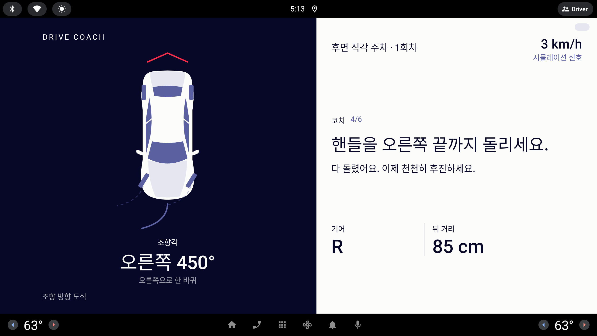
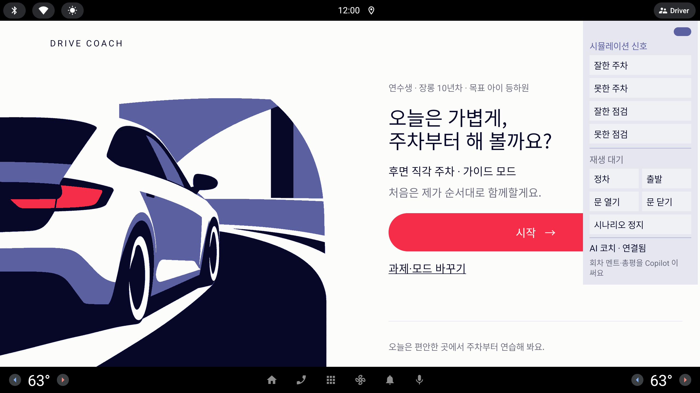

오른쪽 위 작은 알약 하나에 매달린 시연 패널을, 발표자가 시연에 필요한 것을 한곳에서 다루는 "관리자 모드" 로 다시 짠다. 상태기계·채점은 그대로, 진입과 배치만 바꾼다.
「#시뮬레이션알약 — 잘한주차/못한 주차 등이 있는데 관리자 모드로 아예 바꿔서 앱으로 시연 필요한 내용들을 정리해 놓고 싶어 (제안 필요)」— 사용자 피드백, 라운드 22 (동결 태그 inhouse-20261006-1 APK 를 눌러 보고)
모든 시안은 1/3 축척 · 실제 화면은 약 3배 (853×423 = 2560×1268 dp)
지금
우상단 Lavender 알약(캡처 왼쪽 끝)을 누르면 오른쪽에 패널이 펼쳐진다. 눈썹 시뮬레이션 신호 → 지금 과제의 시나리오 칩(잘한 주차·못한 주차·잘한 점검·못한 점검) → 재생 상태 → 정차·출발·문 열기·문 닫기·시나리오 정지 → 맨 아래 AI 코치 · 상태 + AI 연결. 한 기둥에 성격이 다른 것들이 한 줄로 쌓여 있고, 프로필·기록 초기화·배속은 아예 없다. Fake/Hybrid 빌드에서만 존재한다(demo == null 이면 Real).

접힌 상태 — 우상단 작은 Lavender 알약(Maneuver 화면)

펼친 상태 — 시나리오 · 재생 대기 · 정차/문 · AI 코치 · 연결됨
홈 + 오른쪽 패널 (1/3) — 네 섹션, 눈썹마다 접힘
DRIVE COACH
연수생 · 장롱 10년차 · 목표 아이 등하원
오늘은 가볍게, 주차부터 해 볼까요?
후면 직각 주차 · 가이드 모드
처음은 제가 순서대로 함께할게요.
시작 →
과제·모드 바꾸기
관리자 · 시뮬레이션
▾ 시나리오재생 대기
잘한 주차못한 주차시나리오 정지
▾ 차량 조작배속 1배
정차출발
문 열기문 닫기
▸ AI 코치연결됨
▸ 기록·프로필장롱 10년차
▸ 녹화패널 숨김
알약 누름→패널 · 섹션 넷→눈썹 눌러 접고 펴기→알약 다시 눌러 닫기
A
정리
지금 패널의 자리·크기·진입은 그대로 두고, 안을 네 섹션(시나리오 / 차량 조작 / AI / 기록·프로필)으로 나눠 눈썹마다 접는다. 눈썹 오른쪽에 상태 요약(재생 대기 · 배속 · 연결됨 · 장롱 10년차)이 붙어 접혀 있어도 읽힌다.
들어 있는 것
시나리오: 지금 과제의 칩 + 시나리오 정지. 재생 상태는 눈썹 오른쪽으로.
차량 조작: 정차·출발 · 문 열기·닫기 · 배속(눈썹에 표시, 누르면 1·2·4배).
AI 코치: 상태 한 줄 + 필요할 때만 AI 연결.
기록·프로필: 프로필 전환 칩(장롱 10년차 / 초보 / 숙련) · 기록 초기화.
녹화: 패널 숨김(세션 끝까지 알약도 안 그림).
장점
구현이 가장 작다 — 지금 DemoPanel 컴포저블에 섹션 접힘만 더한다.
발표자 손 위치가 지금과 같아 시연 대본(05_demo_script.md) 실측 시각을 다시 재지 않아도 된다.
주의점
섹션이 늘어도 기둥 하나라 2560 화면에서 세로로 길다 — 네 섹션을 다 펴면 넘친다(스크롤 필요).
패널이 홈의 시작 알약을 가리는 문제는 그대로다(캡처 참고).
"시연에 필요한 내용 정리" 라는 요구를 분류로만 답한다 — 순서(대본)는 여전히 머릿속에 있어야 한다.
관리자 시트 (1/3) — 오른쪽 Paper 전체 · 왼쪽 대본 체크리스트 · 오른쪽 이 단계의 조작
DRIVE COACH
관리자 · 시연 대본
닫기 ✕
1부 · 후면 주차 두 회차
못한 주차 재생 · 가이드 모드
정차 → "다 됐어요"
문 열기 → 리포트
다시 시작 · 잘한 주차 재생
자세히 보기 · 두 회차 비교
2부 · 장내 모의시험
평가 모드 · 불합격 시나리오
다시 · 합격 시나리오
진단서 · 공유 범위
3부 · 점검 · 지식 · 예약
점검 7단계 · 잘한 점검
지식 테스트
제휴 시험장 예약
이 단계의 조작
문 열기 → 리포트
문 열기문 닫기정차 상태 유지 중
다음 단계 →
AI 코치 · 연결됨 프로필 · 장롱 10년차 · 배속 1배 신호 · Fake
← 체크 다시 세기
알약(또는 워드마크 길게)→시트 · 대본 ↔ 조작→다음 단계 → (시트 닫히고 실행)→다시 열면 다음 줄이 빨강
B
대본
오른쪽 Paper 전체를 관리자 시트로 덮는다. 왼쪽은 시연 대본 순서(1부 후면 주차 → 2부 모의시험 → 3부)가 체크리스트로, 오른쪽에는 "지금 줄" 에 필요한 조작만 큰 알약으로 놓인다. 다음 단계 → 하나를 누르면 그 줄의 조작이 실행되고 시트가 닫힌다.
들어 있는 것
대본 체크리스트: 줄마다 "무엇을 재생·누르는지" 가 적혀 있다. 지난 줄은 Muted, 지금 줄은 빨간 점.
이 단계의 조작: 그 줄에 해당하는 시나리오·정차·문 알약만. 나머지는 숨긴다.
맨 아래 상태 요약: AI · 프로필 · 배속 · 신호 출처(읽기 전용, 바꾸려면 D 같은 설정 화면이 따로 필요).
체크 다시 세기(대본 처음으로).
장점
"시연 필요한 내용 정리" 를 글자 그대로 — 대본이 앱 안에 들어온다. 심사위원 앞에서 다음 줄만 보면 된다.
조작 실수(잘한 주차를 먼저 누르기)가 구조적으로 막힌다.
주의점
시트가 코칭 화면을 통째로 덮어 녹화 중에는 열 수 없다 — 영상은 컷을 잘라야 한다.
대본이 코드(시드)에 고정된다. 대본이 바뀔 때마다 앱도 바뀐다.
구현이 가장 크다 — 대본 모델 + 줄마다 조작 매핑 + 진행 상태. 마감(10/9) 앞에서 가장 위험.
홈 + 아래 관리자 띠 (1/3) — 워드마크를 길게 누르면 뜨고, 한 줄만 차지한다
DRIVE COACH
연수생 · 장롱 10년차 · 목표 아이 등하원
오늘은 가볍게, 주차부터 해 볼까요?
후면 직각 주차 · 가이드 모드
처음은 제가 순서대로 함께할게요.
시작 →
과제·모드 바꾸기
오늘은 편안한 곳에서 주차부터 연습해 봐요.
관리자잘한 주차못한 주차정지정차출발문 열기문 닫기장롱 10년차 ▾배속 1AI 코치 · 연결됨더 보기 ▴✕
워드마크 길게 누름→아래 띠 한 줄→더 보기 ▴ → 두 줄(프로필·초기화·AI 연결)→✕ 또는 다시 길게 눌러 닫기
C
띠
화면 맨 아래에 Ink 색 띠 한 줄(실제 약 90 dp). 시나리오 칩 · 정차/문 · 프로필 · 배속 · AI 상태가 가로로 한 줄. 코칭 화면을 거의 가리지 않아 녹화하면서도 쓸 수 있다. 자주 안 쓰는 것(기록 초기화·AI 연결·신호 출처)은 더 보기 ▴ 로 두 번째 줄에.
들어 있는 것
첫 줄: 시나리오 칩(지금 과제) · 정지 · 정차·출발·문 열기·닫기 · 프로필 ▾ · 배속 · AI 상태.
둘째 줄(더 보기): 기록 초기화 · AI 연결 · 신호 출처(Fake/Hybrid) · 패널 숨김.
Maneuver 화면에서는 띠가 아래 지표 줄(기어 · 뒤 거리)과 겹치지 않도록 그 위로 올라온다.
장점
화면을 안 가린다 — 영상 녹화와 라이브 시연을 한 빌드로 할 수 있다(-PdemoPanel=false 빌드가 필요 없어질 수도).
진입이 워드마크 길게 누르기라 알약이 사라져 모든 캡처가 깨끗해진다.
구현은 A 와 비슷(가로 Row 하나).
주의점
한 줄에 많이 넣으면 칩이 작아진다 — 2560 폭에서도 글자 약 27 dp, 발표자가 서서 누르기엔 작다.
Ink 띠가 영상에 그대로 찍힌다. 깨끗한 컷이 필요하면 결국 닫고 찍어야 한다.
길게 누르기는 눈에 안 보여 사내 검증자가 못 찾을 수 있다 — INTEGRATION.md 에 적어야 한다.
관리자 홈 (1/3) — 앱 시작 화면에서 워드마크를 길게 누르면 진입, 프리셋을 누르면 세팅된 채 일반 홈으로
DRIVE COACH
관리자 모드
시연 준비
프리셋을 고르면 그 상태로 일반 홈이 열려요. 이 화면은 Real 빌드에 없어요.
지금
AI 코치 · 연결됨 신호 출처 · Fake 전부 기록 · 세션 2 · 프로필 장롱 10년차
시연 프리셋
후면 주차 두 회차못한 → 잘한
장내 모의시험불합격 → 합격
점검 7단계잘한 점검
지식 테스트5문항
예약 → 시험장제휴 시험장
프로필
장롱 10년차초보숙련비움
신호 출처
Fake 전부Hybrid
배속
1배2배4배
세션 중 패널
아래 띠숨김 (녹화)
기록
기록 초기화세션 2 로 채우기
AI 코치
AI 연결규칙 문장만
← 그냥 홈으로
이 설정으로 홈 →
앱 시작 · 워드마크 길게→관리자 홈 · 프리셋→이 설정으로 홈 →→일반 홈 (세팅됨)→세션 중엔 아래 띠(C)
D
준비실
관리자 모드를 별도 홈으로 둔다. 왼쪽 Ink 에 "지금 상태", 오른쪽에 시연 프리셋 카드 다섯 + 프로필 전환 + 신호 출처 + 배속 + 세션 중 패널(띠/숨김) + 기록 + AI. 프리셋을 누르고 이 설정으로 홈 → 하면 앱이 그 상태(과제·모드·프로필·기록)로 세팅된 채 일반 홈이 열린다. 세션 중에 필요한 정차·문 조작은 C 의 띠가 맡는다.
들어 있는 것
프리셋 다섯: 후면 주차 두 회차 · 장내 모의시험 불합격→합격 · 점검 7단계 · 지식 테스트 · 예약→시험장. 프리셋 = 과제 + 모드 + 시나리오 순서 + 필요한 기록.
프로필 전환(장롱 10년차 / 초보 / 숙련 / 비움) — 7번 프로필 시안과 연결.
신호 출처 표시·전환(Fake 전부 / Hybrid) — 빌드 플래그 FILL_MISSING_WITH_FAKE 를 화면에서 읽어 보여 주기만.
배속 · 세션 중 패널(띠 / 숨김) · 기록 초기화 · 기록 채우기 · AI 연결.
장점
"시연 전에 다 세팅하고, 시연 중엔 거의 안 만진다" — 발표자가 가장 편하다. 영상도 깨끗하다.
프로필·기록처럼 세션 밖의 것이 자연스러운 자리를 얻는다. 7번(프로필) 과제의 시연 문제를 여기서 푼다.
일반 홈은 운전자 화면 그대로다 — 관리 기능이 운전자 UI 에 전혀 안 섞인다.
주의점
프리셋 하나 = 시나리오 순서 + 기록 시드. 다섯 개를 다 채우려면 B 만큼은 아니어도 손이 간다 — 첫 단계는 "후면 주차 두 회차" 하나만.
세션 중 조작(정차·문)은 결국 띠(C)가 필요하다. 관리자 홈 혼자서는 시연이 끝나지 않는다.
워드마크 길게 누르기가 Setup 에서만 동작하도록 묶어야 운전 중 진입이 원천 차단된다.
관리자 모드에 들어갈 것 — 시안별 자리
같은 기능이 어느 시안에서 어디에 놓이는지. "—" 는 그 시안에 자리가 없다는 뜻.
기능
A 정리
B 대본
C 띠
D 준비실
시나리오 재생 · 정지
섹션 "시나리오"
지금 줄의 조작으로만
첫 줄 칩
프리셋 안에 순서로 묶임 · 수동은 띠(C)
정차 · 출발
섹션 "차량 조작"
해당 줄에서만
첫 줄 칩
띠(C)
문 열기 · 닫기
섹션 "차량 조작"
해당 줄에서만
첫 줄 칩
띠(C)
프로필 전환
섹션 "기록·프로필" 칩
— (읽기만)
첫 줄 ▾ 메뉴
눈썹 "프로필" 칩
기록 초기화 · 채우기
섹션 "기록·프로필"
체크 다시 세기만
둘째 줄(더 보기)
눈썹 "기록"
AI 연결 · 상태
섹션 "AI 코치"
아래 상태 줄(읽기)
첫 줄 상태 · 연결은 둘째 줄
왼쪽 "지금" + 눈썹 "AI 코치"
배속
눈썹 오른쪽 토글
아래 상태 줄(읽기)
첫 줄 칩
눈썹 "배속"
신호 출처 (Fake / Hybrid) 표시
—
아래 상태 줄
둘째 줄
눈썹 "신호 출처"
녹화용 패널 숨김
섹션 "녹화"
시트 닫으면 끝
✕ 로 닫음(알약 없음)
눈썹 "세션 중 패널" 숨김
시연 순서(대본)
—
왼쪽 체크리스트
—
프리셋 안에 묶여 있음(화면엔 안 보임)
진입 방법
지금처럼 우상단 알약
알약 또는 워드마크 길게
워드마크 길게 누르기
Setup 에서 워드마크 길게 · 세션 중엔 띠(C)
구현 크기
작음
큼
작음
중간(프리셋 하나부터)
진입 방법 — 알약 유지 vs 워드마크 길게 누르기
지금 · 우상단 알약 유지
눈에 보여 사내 검증자·심사위원이 바로 찾는다.
모든 캡처·영상에 작은 Lavender 알약이 찍힌다(지금 캡처마다 보임).
운전자가 실수로 누를 수 있다 — 지금은 Fake 빌드뿐이라 실해는 없지만, Hybrid 로 실차에 올리면 우상단 터치 한 번에 패널이 뜬다.
제안 · 워드마크 길게 누르기(약 2초)
보이는 것이 없어 운전자 화면이 완전히 깨끗하다. 실수로는 열리지 않는다(길게 + 워드마크 위치).
Real 빌드에서는 demo == null 이므로 길게 누르기 핸들러 자체를 달지 않는다 — "절대 없음" 이 코드로 보장된다.
주행 중(속도 > 5 km/h)에는 Setup 외 화면에서 진입 자체를 막는다(규칙 10). 띠(C)는 세션 들어가기 전에 켜 두는 것.
단점: 발견성 0 — INTEGRATION.md 사내 세션 절차와 05_demo_script.md 첫 줄에 적는다. 사내 검증 첫 회만 알약을 같이 두는 과도기 플래그(-PdemoPill)도 가능.
추천
D · 준비실 — 관리자 홈 + 세션 중엔 C 의 띠
"시연에 필요한 내용을 정리해 둔다" 는 요구는 세션 밖(프리셋·프로필·기록·AI)과 세션 안(정차·문)이 다른 자리를 원한다. D 가 밖을, C 띠가 안을 맡으면 일반 홈과 코칭 화면이 운전자 것으로 남고 영상도 깨끗하다. 진입은 워드마크 길게 누르기, Real 빌드에는 핸들러 자체를 달지 않는다. 첫 단계는 프리셋 "후면 주차 두 회차" 하나 + 프로필 전환 + 띠, 나머지 프리셋은 대본이 굳은 뒤.